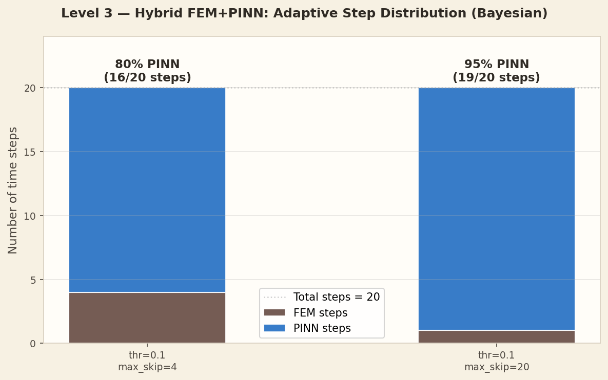
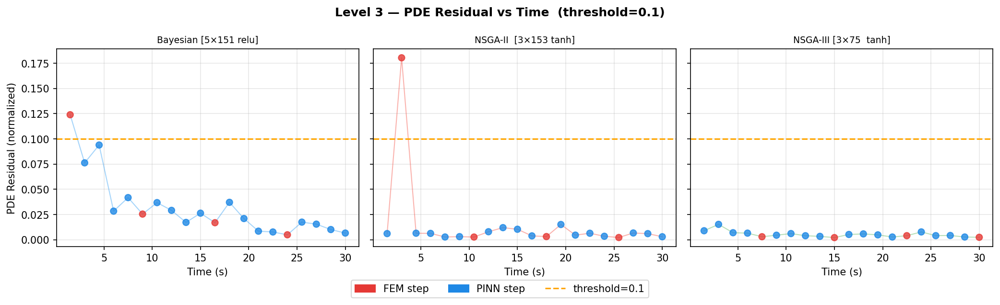
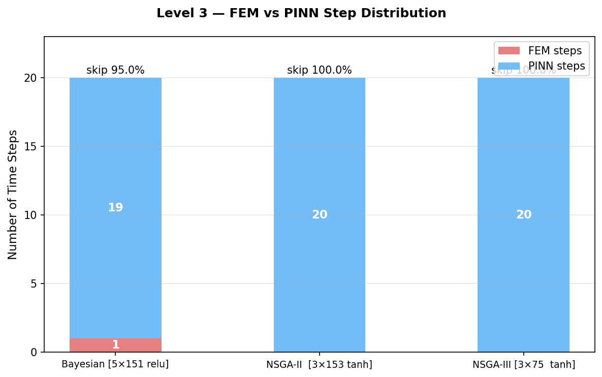

Visualisations
Result Plots
FEM vs PINN Step Rates

Bar chart of FEM and PINN step counts for Config A and Config B.
Residual Trace (Config A)

PDE residual at each step. Blue bars = FEM triggered, orange = PINN accepted.
Step Distribution (Config A)

Visual sequence of FEM/PINN usage across all 21 time steps.
Step Distribution (Config B)

With max skip=20, the router calls FEM even less frequently.